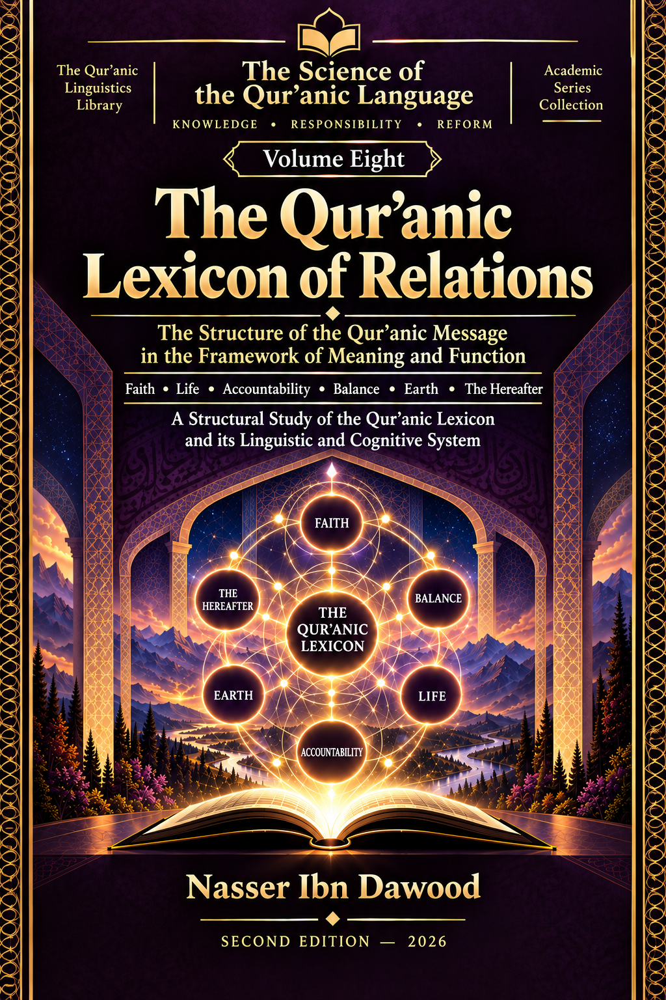

Nasser Ibn Dawood
Text extracted from the author-supplied Word edition; consult the original source.
Preparing the reader…
ENCYCLOPEDIA OF THE ENGINEERING
OF RECOMPENSE IN THE QUR’AN
Volume VIII
The Engineering of Relations in the Qur’anic System of Recompense
A Synthetic Study of the Relations among Trial, Effect, Balance, Veiling, Outcome, Return,
and the Limits of Invocation and Portability
Nasser Ibn Dawood
Condensed Conceptual English Edition • 2026
A conceptual bridge for the international reader
I. The Global Knowledge Manifesto
Knowledge is a universal right. The author firmly believes that wisdom should not be locked behind paywalls or language barriers.
• Global Access Policy: All books in this library are available for free in multiple digital formats (PDF, HTML, DOCX, TXT).
• The Digital Library: As of early 2026, the collection hosts 68 volumes (34 in Arabic and 34 in English), fully optimized for AI-assisted research and digital archiving.
• Official Platforms: * Main Website: nasserhabitat.github.io/nasser-books/
• GitHub: nasserhabitat/nasser-books
Shape
II. Translator’s Note: The Bridge of Meaning
This English edition is a condensed conceptual adaptation. It is not a word-for-word translation, but rather an "extraction of essence." It presents the core philosophical framework in accessible English, omitting the exhaustive linguistic debates and classical references found in the original Arabic text.
For the academic researcher: The original Arabic version remains the primary source for comprehensive linguistic analysis, detailed exegesis (Tafsir), and the complete bibliography.
Contents of the Condensed Edition
1. From Lexical Units to the Architecture of Relations
2. The Relation Record: What Counts as a Relation?
3. Relation Types, Scope, Direction, Condition, and Modifiers
4. Invocation Is Not Portability
5. Event, Response, and Transformation
6. Effect, Balance, and Recompensive Correspondence
7. Time, Delay, Veiling, and Punishment
8. Outcome, Amplification, and the Multiplicity of Endpoints
9. Return, Restoration, and the Limits of Reset
10. Cross-Volume Synthesis Without Cross-Volume Overreach
11. Resistance, Reverse Testing, and the Taxonomy of Failure
12. Multidimensional Portability
13. MOM-V8 v0.1: The Bounded Relation Record Model
14. Final Synthesis: What Is Established, What Is Not, and What Remains Open
Glossary of Core Terms
Closing Note to the International Reader
1. From Lexical Units to the Architecture of Relations
Volume VIII changes the scale of the inquiry. The preceding work of the series had already examined many fields within the Qur’anic system of recompense: trial, action, responsibility, effect, balance, veiling, punishment, outcome, return, forgiveness, expiation, reform, and related concepts. The new difficulty is no longer simply to ask what a word means. It is to ask how these fields are connected, what kind of connection is actually supported by the text, and how far that connection may legitimately be extended.
This shift is decisive. A reader can identify two elements in the same verse and still know very little about their relation. Co-presence does not tell us whether the link is causal, conditional, contrastive, purposive, recompensive, sequential, representational, or merely contextual. A repeated order of terms can be significant without being a universal chronology. A shared structure can be real without having the same scope. A locally supported relation can remain valid even when its attempted universalization fails.
The volume therefore moves the center of analysis from the node to the edge: from the isolated concept to the disciplined study of the bridge between concepts. The question becomes: what exactly does the textual resource allow us to say about this bridge? The book repeatedly refuses to let the visual simplicity of an arrow hide the complexity of the evidence. An arrow between A and B can conceal assumptions about direction, causality, timing, sufficiency, scale, mediation, and transferability. Each assumption must be tested rather than supplied by the reader.